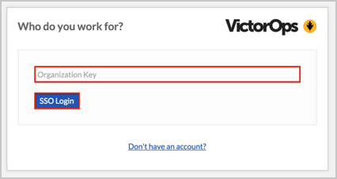

Send an email to VictorOps and request that they enable SAML 2.0 for your account.
Save and attach the following IDP Metadata to the email:
Sign in to Okta Admin app to have this variable generated for you.
In Okta, select the Sign On tab for the VictorOps app, then click Edit.
For Default Relay State, enter: https://portal.victorops.com/auth/sso/[yourCompanyId].
For example, if you log into https://portal.victorops.com/client/acme, then enter https://portal.victorops.com/auth/sso/acme in the Default Relay State field.
Click Save.

The VictorOps support team will process your request. After receiving a confirmation email you can start assigning people to the application.
Notes:
IDP-initiated flows and SP-initiated flows are supported.
Just In Time (JIT) Provisioning is not supported.
For SP-initiated flows:
Flow 1:
Open your Default Relay State URL in a browser: https://portal.victorops.com/auth/sso/[yourCompanyId].
Enter your Company ID.
Click the SSO ID button.
